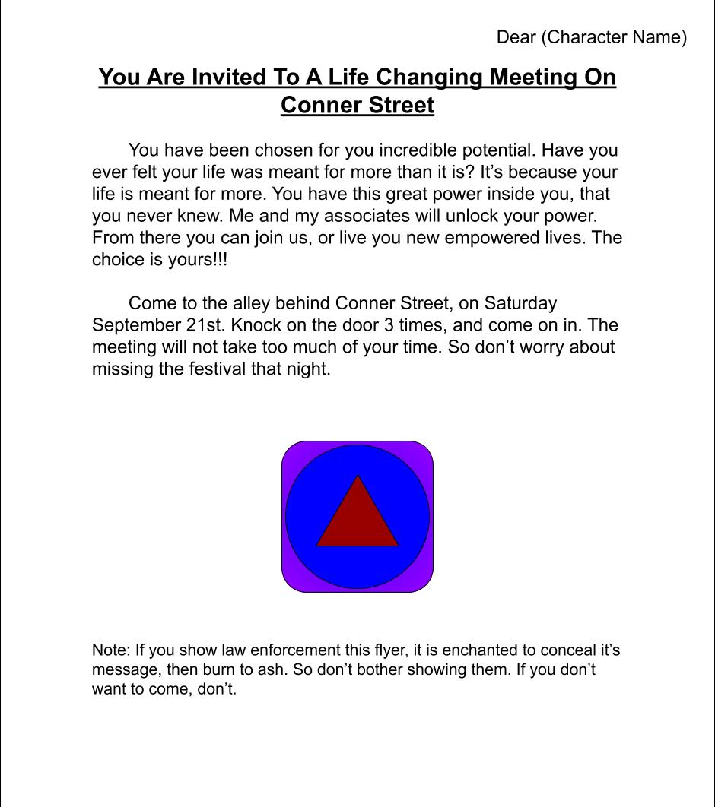

Forgotten Realm
Jaun
Jaun was a peaceful planet, it consisted of three continents Main, Zaydia, and Central. Main was in the modern day era with its citizens not knowing of magic's existence. While the people of Zaydia's lives were filled with it, magic was used everywhere you walked. Not much was known of Central, they usually keep to themselves. Zaydia didn't know other continents were being so primitive. However Main had satellites, so they had very accurate maps of each but didn't feel it was necessary to leave Main.
This all changed when a group of adventures came from all three continents to stop a Primordial Being named The Beast. This group of adventures brought tech and magic from their homelands to each continent, leading each continent to prosper. While a couple of other world-ending events happened, nothing compares to the calamity (see calamity in the world info tab). The calamity changed the world and universe as everyone knew it.
In the present day (100 years after the calamity), the people of Jaun live in a magic-starved world. All living things need magic to survive, with the limited amount in the atmosphere, food struggles to grow like it used to. Few people are born with the ability to wield the magic inside them. If the world continues like this, no creature will be able to survive. This lack of magic has created tension among people. An us against them is the common outlook of many of the people. Which leads to high crime rates, and more job opportunities for adventures like you guys.
Havenport

The Kingdom of Havenport is the 2nd most biggest kingdom in Zaydia. With it's size more and more people come here looking for good soil and better opportunities. The King Salve has ruled Havenport for 120 years, his late wife was his motivation. After her passing 4 years ago he has taken a step back in ruling Havenport. Now his son Grado is the head of the kingdom, his mission is to provide clean water and food to each town. Since he has taken charge, he instated the Clean Water and Food Act. This requires each town to provide a free meal each week to who ever can't afford one. Ofcourse the food isn't the best, but it keeps everyone alive.
Rach of you guys all live in the Kingdom of Havenport. After brosing the boultin boards of your local towns, you have applied for a ad to escort the prince to the Kingdom of Salatude. The ad list a gold price of 50 gold per person. After talking to the agent incharge and going through the interview, you were selected for the job. You have been given the address of Dull Knifes bar in the town of Silver Tooth, to talk out the details with the prince and the rest of the party.
